HUBOnde o papel termina, a gestão inteligente começa.
Apresentação interativa do ecossistema NotPaper Hub: aplicativo para totem/tablet Android, versão web e arte do banner.
1 · Totem de exposição — retrato (Android, sem instalar APK)
Abrir versão totem
No Chrome do totem: ⋮ → "Instalar app" (ou "Adicionar à tela inicial"). Abre em tela cheia, tela sempre ligada, funciona sem internet depois do 1º acesso.
2 · iPhone, iPad e Windows — retrato
Abrir versão retrato
iPhone/iPad: Compartilhar → "Adicionar à Tela de Início". Windows: Edge/Chrome → "Instalar aplicativo".
3 · Windows, Mac e iPad — paisagem (projetor)
Abrir versão paisagem
Para projetor e TV 16:9. Abra em tela cheia (F11 no Windows) e instale como app se quiser.
Outros arquivos
APK Android (alternativa)
Só se o totem não puder usar o navegador. 5,5 MB, com o vídeo embutido.
Versão offline para Windows (ZIP)
Descompacte e abra index.html (retrato) ou paisagem.html (projetor). Sem internet.
Banner roll-up 85 x 200 cm (PDF)
Arquivo para a gráfica, em tamanho real.
Instalar o APK: baixe no aparelho, toque no arquivo e permita "instalar apps desconhecidos" para o navegador.
Para atualizar uma versão já instalada, desinstale a anterior primeiro.
Totem: instale a versão totem pelo Chrome e use a fixação de tela (Configurações → Segurança → Fixar app) para o HUB não ser fechado. Desligue a economia de energia/tela do aparelho.
iPad em quiosque: Ajustes → Acessibilidade → Acesso Guiado.
Windows em tela cheia: tecla F11. Em projetor ou TV, use a versão paisagem.
Totem: instale a versão totem pelo Chrome e use a fixação de tela (Configurações → Segurança → Fixar app) para o HUB não ser fechado. Desligue a economia de energia/tela do aparelho.
iPad em quiosque: Ajustes → Acessibilidade → Acesso Guiado.
Windows em tela cheia: tecla F11. Em projetor ou TV, use a versão paisagem.